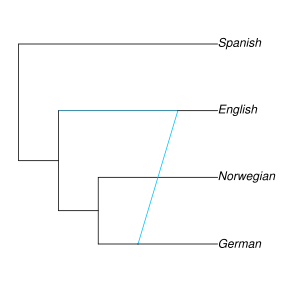

Parsimony on networks
Parsimony score of a given network
We can calculate the parsimony score of a given network topology and a given set of characters. The characters could be in a CSV file in this format:
| taxon | trait1 | trait2 | trait3 | trait4 | trait5 | trait6 ... |
|---|---|---|---|---|---|---|
| English | 1 | 2 | 1 | 1 | 1 | 3 |
| ... | ... |
The trait values can be integer numbers, or strings. The data table may have missing data, and may contain extra taxa that we might want to exclude.
An example file comes with the package, available here or here.
First, we need to read the trait table as a DataFrame object:
julia> using CSV, DataFrames
julia> csvfile = joinpath(Pkg.dir("PhyloNetworks"),"examples","Swadesh.csv");
julia> dat = CSV.read(csvfile);
julia> head(dat) # head shows the first 6 rows only
5×11 DataFrames.DataFrame
│ Row │ taxon │ x1 │ x2 │ x3 │ x4 │ x5 │ x6 │ x7 │ x8 │ x9 │ x10 │
├─────┼────────────┼────┼────┼────┼────┼────┼────┼────┼────┼────┼─────┤
│ 1 │ English │ 1 │ 1 │ 1 │ 1 │ 1 │ 1 │ 1 │ 1 │ 1 │ 1 │
│ 2 │ German │ 1 │ 2 │ 2 │ 1 │ 2 │ 2 │ 1 │ 2 │ 1 │ 2 │
│ 3 │ Norwegian │ 1 │ 2 │ 1 │ 1 │ 3 │ 3 │ 1 │ 3 │ 1 │ 1 │
│ 4 │ Spanish │ 1 │ 2 │ 2 │ 2 │ 4 │ 4 │ 2 │ 4 │ 2 │ 3 │
│ 5 │ Portuguese │ 1 │ 2 │ 2 │ 2 │ 4 │ 4 │ 2 │ 4 │ 2 │ 3 │
Then, we need to convert the DataFrame object dat into a vector of species and traits. The species names are in column 1 named taxon, and the traits are in columns 2-11. The trait data need to be converted to a list of vectors, with one vector for each species. An internal function is provided for this:
julia> species, traits = PhyloNetworks.readCSVtoArray(dat);
julia> species
5-element Array{String,1}:
"English"
"German"
"Norwegian"
"Spanish"
"Portuguese"
julia> traits
5-element Array{Array{Any,1},1}:
Any[1, 1, 1, 1, 1, 1, 1, 1, 1, 1]
Any[1, 2, 2, 1, 2, 2, 1, 2, 1, 2]
Any[1, 2, 1, 1, 3, 3, 1, 3, 1, 1]
Any[1, 2, 2, 2, 4, 4, 2, 4, 2, 3]
Any[1, 2, 2, 2, 4, 4, 2, 4, 2, 3]
Then, we read the network as usual:
julia> net = readTopology("(Spanish,((English)#H1,(Norwegian,(German,#H1))));");
using PhyloPlots, RCall R"par"(mar = [0,0,0,0]); plot(net, :R, xlim=[0.8,7.5]);

There are different types of parsimony scores on networks. Currently, we have implemented the softwired criterion only, with two different functions: parsimonySoftwired and parsimonyGF.
The function parsimonySoftwired uses a faster algorithm than parsimonyGF, but can solve the softwired criterion only.
julia> score = parsimonySoftwired(net, species, traits) 17.0 julia> score = parsimonyGF(net,species,traits,:softwired) 17.0
Finding the most parsimonious network
The function maxParsimonyNet searches for the most parsimonious level-1 network. It uses the parsimonyGF function, with softwired criterion as default, which will be extended to other criteria later.
Just like snaq!, maxParsimonyNet requires a starting topology, which can be a tree or a level-1 network, and returns a level-1 network. Taxa present in the data but absent from the starting topology will be ignored during the search.
starttree = readTopology("(((English,German),Norwegian),Spanish);"); net1 = maxParsimonyNet(starttree, dat, hmax=1, outgroup="Spanish", rootname="swadesh")
The example data is very small: only 1 of the 11 traits is parsimony informative, on the 4 taxa specified by the starting topology. So these data happen to be compatible with a tree, and that tree is returned despite allowing for up to 1 reticulation: (Spanish,((English,Norwegian),German));.